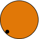
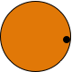

Join us in re-enacting one of the great scientific endeavours of the 18th century. Like Captain Cook before us, we will observe the transit of venus to determine the distance between the Earth and the Sun - the Astronomical Unit.
To participate tweet one or more of the following events:
When Venus is fully within the Sun's disc:
#venusobs entered 9:22:06

When Venus is just about to exit the Sun's disc:
#venusobs left 11:08:57
Be sure to geotag your tweets, so we know where you are — it's important for the maths.
Tweet your observation times in your local time; but be sure to send your tweet soon after making each observation.
Warning: Do not attempt to observe the sun directly; doing so will cause serious and permanent damage to your eyesight. These safety steps from the Queensland Government should be followed.
To achieve an accurate observation, we recommend using a pinhole or telescopic projection. For more information about the transit and how to observe it, see Transit of Venus Australia - this site includes approximate transit times, so you'll know when to set up and observe.